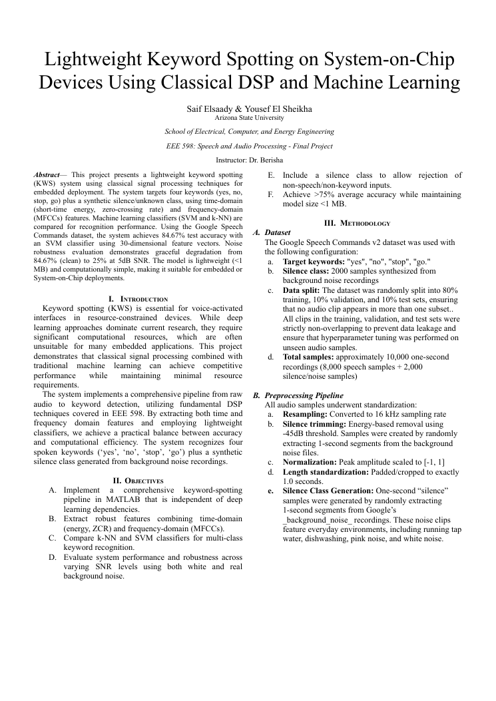

Lightweight keyword spotting from scratch using classical DSP and machine learning

A keyword spotting (KWS) system that recognizes the spoken words 'yes', 'no', 'stop', and 'go' plus a silence/unknown class, built entirely with classical signal processing instead of deep learning. The goal was to show that hand-crafted time- and frequency-domain features paired with traditional classifiers can hit competitive accuracy while staying small and fast enough for embedded or System-on-Chip deployment. Completed for ASU's EEE 598 Speech and Audio Processing course with co-author Yousef El Sheikha.
Audio from the Google Speech Commands v2 dataset was preprocessed (16 kHz resample, silence trimming, normalization, fixed 1 s length) and split into train/validation/test sets. Features were extracted over 20-25 ms Hamming windows with a 10 ms hop: short-time energy, zero-crossing rate, and MFCCs, aggregated to a fixed-length per-clip vector. k-NN (k in {1,3,5,7}) and SVM (RBF kernel, grid-searched kernel scale and box constraint) classifiers were trained and tuned on the validation set, then evaluated on a held-out test set and under added noise. The system was implemented in MATLAB and re-implemented as a four-phase Python pipeline (librosa, scikit-learn).
The best configuration (SVM with MFCC+Energy+ZCR features) reached 84.67% test accuracy on five classes, with the 'silence' class near-perfect (99.5%) and the main confusion between acoustically similar 'no' and 'go'. Under noise the system degraded gracefully, staying above 50% accuracy down to roughly 10 dB SNR. Full metrics, confusion matrices, and noise tables are in the final report.